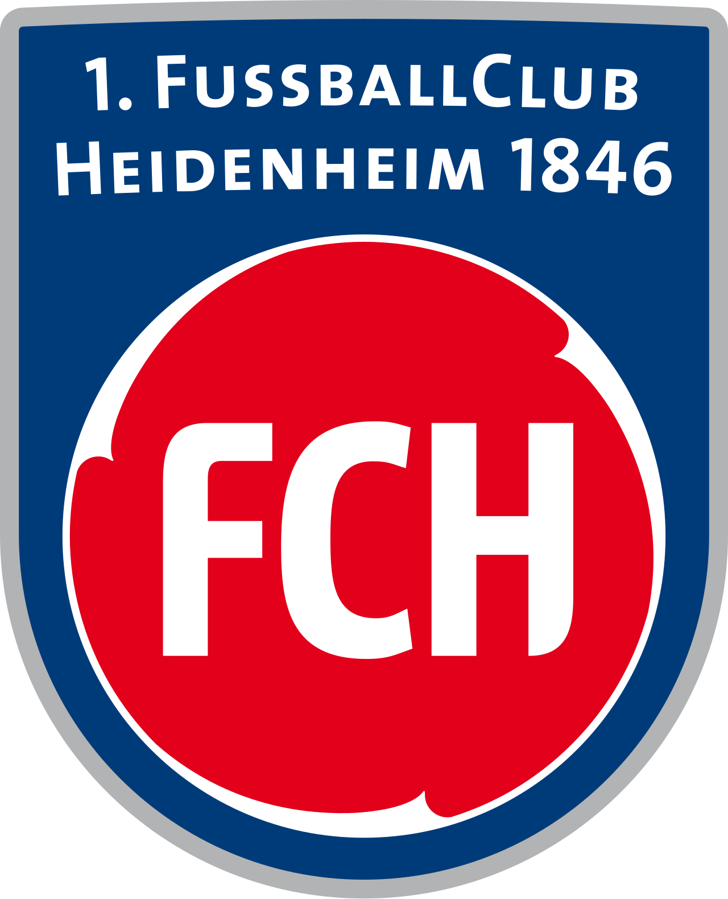
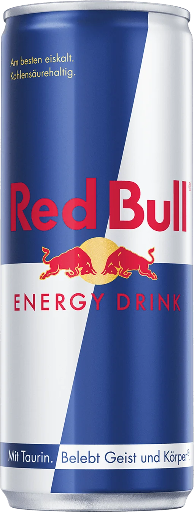

Spieltag 1
Eintracht Frankfurt 4 - 1 Werder Bremen
Sonntag, 23.08.2025 15:30 - Deutsche Bank Park
Spieltag 2
Werder Bremen 3 - 3 Bayer Leverkusen
Samstag, 28.02.2026 15:30 - Weserstadion
Spieltag 3
Borussia M' Gladbach 0 - 4 Werder Bremen
Sonntag, 14.09.2025 17:30 - Borussia Park
Spieltag 4
Werder Bremen 0 - 3 SC Freiburg
Samstag, 20.09.2025 15:30 - Weserstadion
Spieltag 5
FC Bayern München 4 - 0 Werder Bremen
Freitag, 26.09.2025 20:30 - Allianz Arena
Spieltag 6
Werder Bremen 1 - 0 St. Pauli
Samstag, 04.10.2025 15:30 - Weserstadion
Spieltag 7
 Heidenheim 2 - 2 Werder Bremen
Samstag, 18.10.2025 15:30 - Voith-Arena
Spieltag 8
Werder Bremen 1 - 0 Union Berlin
Freitag, 24.10.2025 20:30 - Weserstadion
Spieltag 9
FSV Mainz 05 1 - 1 Werder Bremen
Samstag, 01.11.2025 15:30 - MEWA Arena
Spieltag 10
Werder Bremen 2 - 1 VfL Wolfsburg
Freitag, 07.11.2025 20:30 - Weserstadion
Spieltag 11
 RasenBallsport Leipzig 2 - 0 Werder Bremen
Sonntag, 23.11.2025 15:30 - Red Bull Arena
Spieltag 12
Werder Bremen 1 - 1 1. FC Köln
Samstag, 29.11.2025 15:30 - Weserstadion
Spieltag 13
Hamburger SV 3 - 2 Werder Bremen
Sonntag, 07.12.2025 15:30 - Volkspark Stadion
Spieltag 14
Werder Bremen 0 - 4 VfB Stuttgart
Sonntag, 14.12.2025 19:30 - Weserstadion
Spieltag 15
FC Augsburg 0 - 0 Werder Bremen
Samstag, 20.12.2025 15:30 - WWK Arena
Spieltag 16
Werder Bremen 0 - 2 TSG Hoffenheim
Dienstag, 27.01.2026 20:30 - Weserstadion
Spieltag 17
Borussia Dortmund 3 - 0 Werder Bremen
Dienstag, 13.01.2026 20:30 - Signal Iduna Park
Spieltag 18
Werder Bremen 3 - 3 Eintracht Frankfurt
Freitag, 16.01.2026 20:30 - Weserstadion
Spieltag 19
Bayer Leverkusen 1 - 0 Werder Bremen
Samstag, 24.01.2026 15:30 - Bay Arena
Spieltag 20
Werder Bremen 1 - 1 Borussia M' Gladbach
Samstag, 31.01.2026 15:30 - Weserstadion
Spieltag 21
SC Freiburg 1 - 0 Werder Bremen
Samstag, 07.02.2026 15:30 - Europa-Park
Spieltag 22
Werder Bremen 0 - 3 FC Bayern München
Samstag, 14.02.2026 15:30 - Weserstadion
Spieltag 23
St. Pauli 2 - 1 Werder Bremen
Sonntag 22.02.2026 17:30 - Millerntor Stadion
Spieltag 24
Werder Bremen - Heidenheim
Spieltag 25
Union Berlin - Werder Bremen
Sonntag, 08.03.2026 17:30 - A. d. A. Försterei
Spieltag 26
Werder Bremen - Mainz 05
Samstag, 15.03.2026 15:30 - Weserstadion
Spieltag 27
VfL Wolfsburg - Werder Bremen
Samstag, 21.03.2026 15:30 - Volkswagen Arena
Spieltag 28
Werder Bremen - RasenBallsport Leipzig
Samstag, 04.04.2026 15:30 - Weserstadion
Spieltag 29
1. FC Köln - Werder Bremen
Samstag, 11.04.2026 15:30 - RheinEnergieSTADION
Spieltag 30
Werder Bremen - Hamberger SV
Samstag, 18.04.2026 15:30 - Weserstadion
Spieltag 31
VfB Stuttgart - Werder Bremen
Samstag, 25.04.2026 15:30 - MHPArena
Spieltag 32
Werder Bremen - FC Augsburg
Samstag, 02.05.2026 15:30 - Weserstadion
Spieltag 33
TSG Hoffenheim - Werder Bremen
Samstag, 09.05.2026 15:30 - PreZero Arena
Spieltag 34
Werder Bremen - Borussia Dortmund
Samstag, 16.05.2026 15:30 - Weserstadion